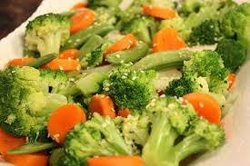
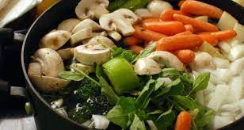
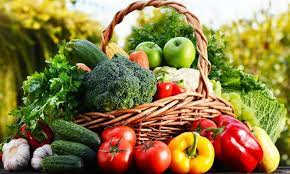
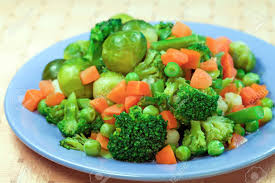
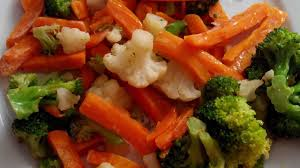

RECETAS SIMPLES
VERDURAS
INDICE
Verdura1 sopa caliente y sabrosa parece que recompone cuerpo y espíritu.
Pero hacer una buena sopa casera, con mucho sabor pero ligera

Verdura2 sopa caliente y sabrosa parece que recompone cuerpo y espíritu.
Pero hacer una buena sopa casera, con mucho sabor pero ligera

Verdura3 sopa caliente y sabrosa parece que recompone cuerpo y espíritu.
Pero hacer una buena sopa casera, con mucho sabor pero ligera

Verdura4 sopa caliente y sabrosa parece que recompone cuerpo y espíritu.
Pero hacer una buena sopa casera, con mucho sabor pero ligera
Verdura5 sopa caliente y sabrosa parece que recompone cuerpo y espíritu.
Pero hacer una buena sopa casera, con mucho sabor pero ligera

Verdura6 sopa caliente y sabrosa parece que recompone cuerpo y espíritu.
Pero hacer una buena sopa casera, con mucho sabor pero ligera
